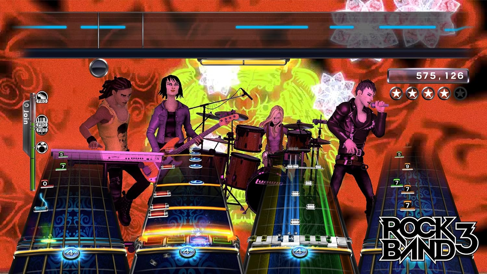

ROCK BAND 3
Como en los otros juegos de la serie, Rock Band 3 permite a los jugadores imitar a una banda de rock y otros géneros usando controles especiales que imitan la guitarra y el bajo eléctrico, la batería y con un micrófono para las voces. Rock Band 3 mejora con respecto a los juegos previos con la inclusión 3 armonías vocales previamente usadas en The Beatles: Rock Band y Green Day: Rock Band y agregando soporte para un teclado MIDI de 25 teclas.
